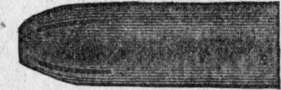
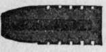
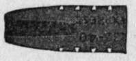
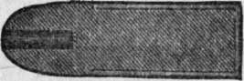
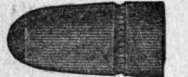
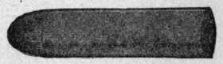
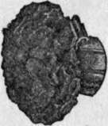
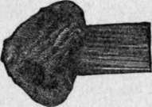

Killing Power. Part 2
Description
This section is from the "" book, by .
Killing Power. Part 2
In our tables of modern ammunition we see a .35 caliber Winchester of 779 foot-pounds muzzle energy, and another .35 Winchester of 2,687 footpounds. The former is rather light for deer shooting, and the latter will knock out a grizzly bear. Again, we note a bullet of only .256 inch diameter and 139 grains weight, that has a muzzle energy of 2,585 foot-pounds, which is much greater than that of any .45 or .50 caliber cartridge loaded with black gunpowder that ever was used in a repeating arm. It attains this power by a muzzle velocity of 2,887 feet a seeond.
We come, now, to a matter of caliber that does affect killing power. It is not the normal diameter of the bullet, but its diameter when expanded by impact. This latter factor determines, in great degree, how much of the projectile's energy will actually be utilized in shocking the thing struck. Here is where the question of big bores vs. small bores really hinges.
The pressure and heat of smokeless powder and the quick twist of rifling required by modern arms compel us to use bullets wholly or partly encased in jackets of hard metal. The fault of a full-jacketed bullet is that, unless driven at extremely high speed, it only punches a small hole through a beast, piercing so easily that it does not expend much of its energy on the object struck, but wastes it in flight beyond. Such a missile can pass close to a vital organ without disturbing it, close to a nerve without severely shocking it, close to a blood vessel without rupturing it. The hole of exit is little if any larger than that of entrance, and both of them contract so as not to let out blood.
A good bullet for hunting any big game except the greater pachyderms is one that will expand when it hits, and still hold together so as to penetrate deeply. Such a bullet " pulps " tissue all around its course, drives body fluids violently away from it, smashes bones instead of drilling them, paralyzes nerves, and either imparts its full blow by stopping in the body or tears a big hole of exit through which the life-blood rapidly drains. This sounds gruesome, but in fact it is humane; for the quicker a beast is knocked down and dispatched, the better it is for all concerned.
To make a manteled bullet expand on impact, its tip must be so modified as to open and let part of the lead core flatten out. In a full-jacketed bullet the metal casing does not cover the butt end. If the tip, then, is split or filed across, there is risk of the lead core being blown forward and through it, stripping the jacket and perhaps lodging it in the gun barrel. If this happens, and is not discovered before the next shot, the barrel will either be bulged or burst. Special bullets are manufactured abroad that have the head split back of the tip (fig. 6) leaving the latter intact.
Figure 6.
Their effectiveness depends upon so many contingencies that they are scarcely to be recommended.
Hollow bullets have been employed for many years. If driven to low speed the cavity must be deep (fig. 7) to insure expansion; if at higher speed, it must be shallower (fig. 8) or the missile will spread prematurely and fly to fragments, making only a superficial wound. For cartridges of great velocity the hollow must be shallow (fig. 9) and backed by a long core of lead. In such case a plug, wedge, or steel ball (Hoxie bullet) may be fitted into the mouth of the cavity to compel the tip to spread when its hits.
Figure 7.
Figure 8.
Figure 9.
In general it may be said of hollow bullets that they are ill-balanced and therefore inaccurate at any but short range. Their action is uncertain, because velocity depends upon range, animals vary a great deal in toughness of hide and tissue, and a hollow bullet that would merely flatten on flesh or viscera might fly to flinders on bone.
Up to date, the favorite expanding bullet in our country is what is called the " soft-nose" (figs. 10, 12). This is solid throughout, but has the base covered by the hard metal envelope and the tip left with more or less of the lead core exposed, A well proportioned and well made bullet of this sort generally gives satisfaction. Its expansion depends upon how much lead is left naked at the tip, this being regulated according to the velocity of impact. It will not do to expose too much of it, nor to make the tip flat, because such a ball is easily deformed and is prone to jam when fed upward at a slant from the magazlne; neither will it fly accurately, nor with normal speed.
Figure 10.
Figure 12.
A short soft-nose bullet (fig. 10) is not so reliable as a long one (fig. 12), because it upsets throughout so much of its length (fig. 11) that it is prone to go to pieces, especially on bone, and fail to pierce deep enough. A long bullet mushrooms at the tip only (fig. 13) and has a solid cylinder back of it to drive ahead. Thickness of jacket modifies such action a good deal; also softness or hardness of the leaden core.
Figure 11.
Figure 13.
Any soft-nose bullet should have its length, strength of mantel, and temper and relative exposure of tip carefully proportioned to the power of the gun and the character of game hunted; otherwise it will not give satisfaction. Soft-nose bullets of Spitzer shape, to be propelled at very high speed, have but little of the point left naked (fig. 14). They are more likely to be accurate fliers than round-headed ones.
Continue to: